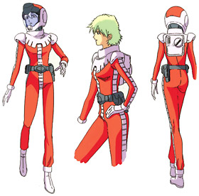
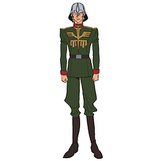

联邦军

|
08小隊でＭＳパイロットを務める先任下士官。重力下戦闘では着任直後のシローを上回るＭＳ操縦技術を誇り、どんな窮 地にあっても冷静な判断力を失わない、コジマ大隊随一の女傑である。服務態度も軍人の鏡そのものだが、反面その豊富な経験ゆえか、過酷な戦場に似つかわし くないシローの理想主義を陰で「甘ちゃん」と揶揄。服従こそすれ敬意は払っていなかったが、その実直な人柄とめきめき上達する腕前から、徐々に指揮官とし て信頼を寄せるようになる。因みにＭＳパイロットになる以前は医大生で、軍医だった夫と死に別れた未亡人。仲間に対して時折見せる気遣いからも、勇猛で沈 着な戦いぶりに反し、心根の優しい女性であることが伺える。 |
|
08小隊のホバートラック操縦手兼ソナー手。音紋ソナーで敵を捉える鋭い聴覚と、それに基づく的確な戦況判断で、隊を 支える重要な戦力だ。ただし、性格的にはアナーキーなお調子者で、服務態度も不真面目千番。シローの前任者をノイローゼに追い込んだのもこの男である。も ちろん新任のシローに好意的なはずはなく、理想化肌な物言いにも辛辣な態度を取るが、やがて口先だけではないその行動力を認め、連帯感を育んで行く。志願 以前はなんとミュージシャンで、着任中に自作曲のメジャーデビューが決まった際には、自らラジオにリクエストして宣伝に励んでいた。反面、極度の閉所恐怖 症とカレンに寄せる想いだけは、ひた隠しにしているようだ。 |
|
シロー、ミケルと共に08小隊に配属されたＭＳパイロット。連邦軍には貴重なエースで、すでに先行量産型ジムで６機の 撃墜スコアを記録している。ただし、その経歴すべてにおいて、彼を除く所属部隊は三度目の出撃で全滅。おかげでコジマ大隊の者たちからは「死神サンダー ス」と呼ばれており、彼自身も不吉なジンクスを大変恐れていた。この事実からも分かるように、強面の巨漢という外見とは裏腹に、性格的には理知的で信義に 篤い常識人。08小隊着任直前の宇宙における戦闘でも、自らの窮地に単身ボールで駆けつけたシローを気遣い、乗機の修理もそこそこに再出撃を主張した。以 来、新米のシローに全幅の信頼を寄せる、数少ない理解者となる。 |
|
08小隊のホバートラック操縦手兼機銃手。シローと同じ新米兵士だが、意気盛んと言うには程遠く、口を開けば出てくる のは愚痴か悲観論ばかり。おかげで周りの者からは鼻であしらわれがちなのだが、本人はあくまで「物事を冷静に見ている」つもりらしい。とにかく「生きて故 郷に残してきた恋人のもとに帰る」ことだけを考え、暇さえあればせっせと手紙を書きしたためていたのだが、そんな彼の想いも空しく、やがて遠距離恋愛は怪 しげな雲行きに……。その不安も手伝ってシローと衝突することもしばしばあったが、一方でどんな苦境にあっても希望を失わず、信念に基いて行動する彼に少 しずつ感化され、その内面で何かが変わり始めるのだった。 |

|
コジマ大隊の生命線である、補給中隊の隊長。無類の博打好きなうえ任務中も常に酔っ払っている、絵に描いたような不良 隊員だが、軍隊の裏も表も知り尽くした食えない人物なのも確かで、食料から武器弾薬、果ては大隊長のサイン入り命令書まで、およそ手に入れられない物はな い。また、テンガロンハットを片時も手放さず、妙齢のご婦人には愛と敬意を捧げて止まない、粋な紳士という意外な一面も併せ持っている。08小隊員の行動 を面白がっている節があり、なんだかんだ言いながら面倒を見ることもしばしば。 |
|
シローら第08小隊をはじめ、８小隊24機のＭＳを有する極東方面軍機械化混成大隊の総指揮官。部隊の通称である「コ ジマ大隊」も、この人物の名に由来する。つまりは隊で一番偉い人なのだが、階級に反して見た目の印象は典型的な昼行灯。エアコン嫌いにもかかわらず灼熱の 東南アジアに配属されたせいか、調子の悪い扇風機にぶつくさ文句を言うばかりで、配属当初のシローを大いに困惑させた。だがそんな仮面の下には、部下を想 い義を貫く太い気骨と、ここ一番で有無を言わさぬ威厳を秘めており、ひとたび喧嘩の仲裁に入れば、気の荒い部隊員もすごすごと尻尾を巻くほど。やがてシ ローたちも、その高潔な人柄に多大な尊敬を抱くようになる。 |
|
シローらのコジマ大隊が所属する、極東方面軍の連隊長。レビル将軍をライバル視しており、軍上層部でもかなりの権勢を 誇ると思われる。また事実、MSを大量導入した機械化部隊を創設するなど、先見の明に優れた軍略家ではあった。だがその人間性は、不実にして酷薄非情。ア イナとの邂逅から戻ったシローの査問会では、うわべこそ理解のある態度を見せつつ裏では小隊員に監視を命じ、アプサラス開発基地攻略戦でもトラップの存在 を見抜いたうえで、坑道爆破にMSを投入。核融合炉の誘爆を意図的に引き起こそうと狙っていた。勝つためには部下の命すら顧みない彼の態度は、ギニアスの 狂気と重奏を成し、やがて大きな悲劇を招く。 |
吉翁军
 |

|
ジオン公国の貴族サハリン家の当主で、アイナ•サハリンの兄。かつては名門として権勢を揮うも、現在は没落してしまっ た同家再興を目論み、連邦軍本部ジャブロー基地攻撃用のMA、アプサラスの開発に邁進する。幼い頃の事故が原因で身体を病んでおり、定期的に薬を投与しな ければならない身体となっており、身の回りの世話からアプサラスのテストまでをアイナに任せている。さらに、家門再興の執念と身体的ハンディキャップから 徐々に精神も病み、アプサラス計画以外の一切が目に入らくなってしまう。その冷酷さがアイナにとって大きなプレッシャーとなり、シローへの共感と思慕、そ して精神的自立を促す一因ともなって行く。 |
|
オデッサ鉱山基地陥落の余波を受け、自軍鉱山基地へ向けて単独で撤退中だった、ジオン軍のMS小隊。ザクⅠに搭乗する 女性隊長のトップと、ザクⅡに搭乗するアス、デルの３名から成る。道中、ゲリラの拠点とは知らずにキキの村に立ち寄った彼らは、食料の供出を依頼。トップ とデルは話し合いで事を済ませようとするが、好色で残虐なアスが力づくで話をつけようと暴走し、あまつさえキキに狼藉を働こうとしたせいで、大きな悲劇を 招いてしまう。このことからもわかるように、部下であるアスに銃を向けてまで村人を守ろうとする小隊長トップは非常に高潔な軍人であり、デルも子供好きで 温厚な性格。それだけに、特にトップはアスと馬が合わないようだ。 |
|
サハリン家に絶対の忠誠を誓う、ジオン公国軍きってのエースパイロット。アプサラス開発に没頭するギニアス技術少将に かわって、その防衛と開発基地の軍令面を一手に担ってもおり、現場将兵たちの信望も篤い。ただし、狂気に蝕まれつつあるギニアスの冷酷さには嫌悪を感じて もおり、反面アイナに対しては父親同然の深い愛情を抱いていた。盲信的な腹心と言うよりは、己が忠義の誓いを重んじる「侍」のような男である。事実戦局終 盤には、ザンジバル級ケルゲレンの撤退進路を確保すべく、愛機グフカスタムを駆って単身出撃。08小隊を含む連邦軍7部隊をまったく寄せ付けない獅子奮迅 の戦いを見せ、シローをすら震え上がらせた。 |
|
ヨーロッパ戦線のジオン地上軍で師団長を務める将校。貴族社会の一員でもありサハリン家とは旧知の間柄だが、よく言え ば豪放磊落、悪く言えば品のない言動が目立ち、兄妹の双方から疎まれていた節がある。ただし将校としては、部下思いで信望も篤い好漢。オデッサ基地からの 撤退戦では南極条約違反の気化爆弾まで使用して味方の時間を稼ぐなど、現実主義で情け容赦ない行動力も見せた。さらに大局を見据えることもできる彼は、地 上の友軍を宇宙へ逃がすために、ギニアスの基地を再集結拠点に使おうと画策。そのためにアプサラス計画の中止をギレン•ザビ総帥に進言しようと企むが、こ れが狂気に走ったギニアスの暴挙を招く結果となる。 |
 |
ジオン公国軍ヨーロッパ方面軍の士官。オデッサからの撤退中、自身が機長を務めるガウ攻撃空母が、空挺降下作戦中の 08小隊と遭遇。一度は交戦に入るが、ブリッジに張り付いたシローのEz-8に銃を向けられながらも「攻撃しないこと」を条件に見逃され、感謝とも屈辱と もつかぬ複雑な感情を抱く。その後、ケラーネ率いる敗残兵部隊と合流した彼は、追撃してくるのがあの08小隊と知って、有志とともに撤退の時間稼ぎに志 願。わずか３両のマゼラアタックだけを塹壕に配した巧みな砲撃術と、言葉巧みな心理戦で、シローに揺さぶりをかけた。敵同士ではあるものの、同じ指揮官と してシローに共感を覚える好漢だったのだが……。 |
其他（抵抗组织）
|
コジマ大隊が展開していた戦場近くの村に住む少女。一応民間人ではあるのだが、村は自衛と生活のためにゲリラ化してお り、その頭目を父に持つ彼女もまた、幼くして無頼の男どもを率いる一人前のゲリラ戦士である。当然、傍迷惑な戦争を続ける両軍を等しく憎んでいたようだ が、お気に入りの水浴び場で偶然出会ったシローの素直さに惹かれ、以降彼個人のために08小隊のサポート役となった。性格的には見た目の印象どおり、明朗 快活で「しとやかさ」とはまったく無縁。ただし村と自らの境遇ゆえか弱者には優しく、人の痛みにも敏感な気配りを見せる。ことに村の子供たちに向ける視線 は暖かく、いい「お姉ちゃん」役となっているようだ。 |